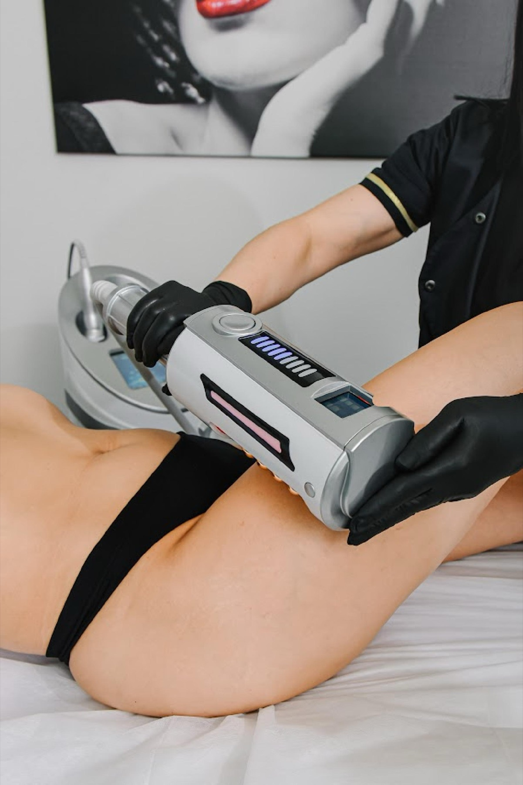
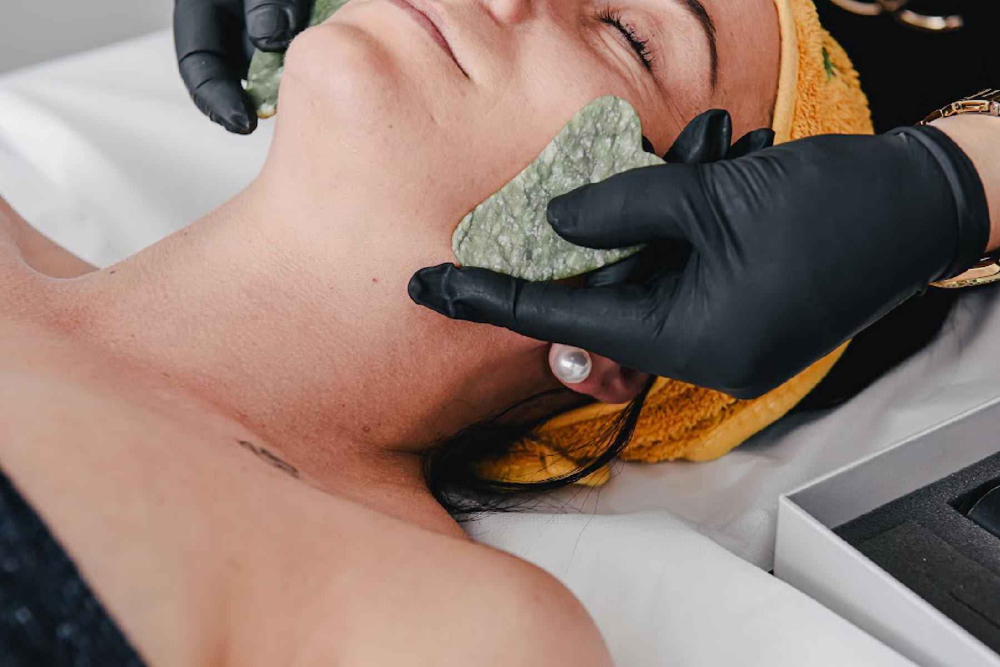
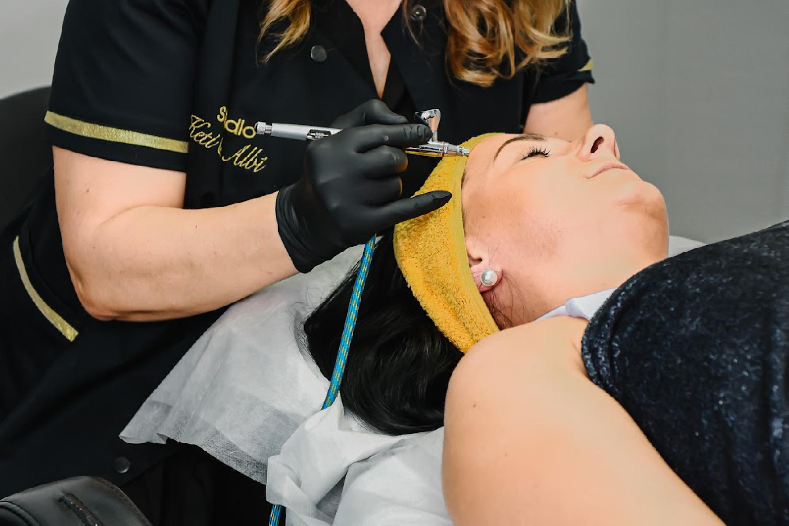
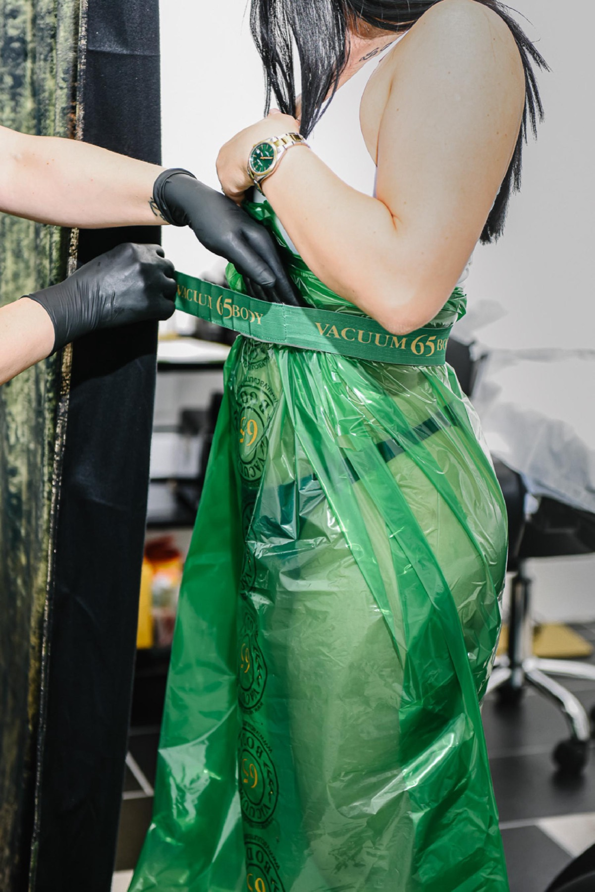
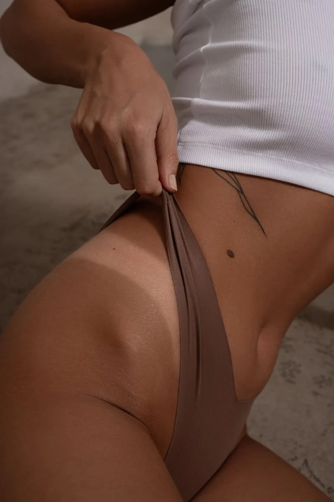

Haut. Form.Stuttgart.
Aquafacial, Körperformung, Gesichtsmassagen und mehr – präzise Technik, klare Ansagen, Termin online in wenigen Klicks.
Termin online buchen
Unsere Dienstleistungen
01Aquafacial
AquaFresh ist die neueste Generation der Hydrodermabrasion und sorgt schon nach der ersten Behandlung für eine sichtbar glattere, reinere und strahlendere Haut. In nur einer Sitzung kombinieren wir sechs Technologien für maximale Ergebnisse: Tiefenreinigung, Aqua-Peeling, Vakuum-Lymphdrainage, Ultraschall, Sauerstofffusion und Wirkstoffinfusion. Die Behandlung liefert professionelle Resultate auf Premium-Kosmetik-Niveau und bietet gleichzeitig ein luxuriöses Wellness-Erlebnis ohne Schmerzen und ohne Ausfallzeit.
02Winner Filler
Winner Filler ist ein exklusives nadelfreies Hyaluron-Treatment für Kundinnen, die luxuriöse Pflege, natürliche Ergebnisse und sichtbare Hautverjüngung ohne Schmerzen suchen. Die hochkonzentrierten Filler dringen dank einer speziellen Technologie schnell und tief in die Haut ein, wirken sofort und entfalten mit jeder Schicht einen intensiven Anti-Age-Effekt.
Zusammen mit Sauerstoff werden hochwirksame Seren, Ampullen, Hyaluronsäure, Vitamine und Stammzellenextrakte mit einem Luftdruck von 2,5 bar sanft durch die Poren in die Haut eingeschleust.
03Maderotherapie Gesicht
Die Maderotherapie Gesicht ist eine natürliche, manuelle Anti-Aging-Massage, die mit speziell geformten Holzwerkzeugen durchgeführt wird. Durch präzise, rhythmische Bewegungen werden die Lymphzirkulation, der Stoffwechsel und die Mikrodurchblutung der Haut intensiv angeregt. Die Gesichtsmuskulatur entspannt sich, Schwellungen reduzieren sich und das Gewebe wird sichtbar straffer. Die Haut erhält einen sofort spürbaren Lifting-Effekt und eine frische, jugendliche Ausstrahlung – ganz ohne Nadeln oder Geräte.
04Gua Sha Gesichtsmassage
Die Gua Sha Gesichtsmassage ist ein jahrhundertealtes Schönheitsritual aus der traditionellen asiatischen Medizin, das heute als luxuriöse Anti-Aging-Behandlung in der Premium-Kosmetik gefeiert wird. Mit einem glatten Edelstein, der perfekt der Gesichtsanatomie folgt, werden sanfte, gezielte Druck- und Streichbewegungen ausgeführt. Dadurch wird die Mikrozirkulation intensiv aktiviert, angestaute Flüssigkeit abgebaut und die Haut von innen revitalisiert. Das Ergebnis ist ein entspannter, definierter und strahlender Gesichtsausdruck.
05Vacuum65 Body
Natürlich definierte Körperkonturen durch aktivierende Vakuum-Lymphdrainage. Vacuum65 Body aktiviert den Stoffwechsel, unterstützt den Abbau von Fettdepots und hilft, Cellulite sichtbar zu reduzieren.
- 45 Minuten Behandlung
- Aktivierung der Lymphzirkulation
- Unterstützung der Körperformung
- Natürlich und nicht invasiv
Geeignet bei: Cellulite, Wassereinlagerungen, müden und schweren Beinen, nach Diät oder Gewichtsverlust.
06Rolosphere (Rolosfera)
Rolosphere ist eine moderne Premium-Technologie zur Körperstraffung und Silhouettenmodellierung, die mit 52 rotierenden Kugeln und verschiedenen Lichtfrequenzen arbeitet. Die 52 Kugeln erzeugen eine hochpräzise Mikrovibration, die tief im Gewebe wirkt, Cellulite löst, Fettdepots auflockert und die Haut sichtbar glättet. Die Behandlung stimuliert gleichzeitig die Mikrozirkulation, den Lymphfluss und die Sauerstoffversorgung des Gewebes, während verspannte Muskeln sanft entspannt werden.
07Maderotherapie Körper
Maderotherapie Körper ist eine natürliche, manuelle Technik zur Körperformung und Hautstraffung, die mit speziell geformten Holzwerkzeugen durchgeführt wird. Die präzisen, rhythmischen Bewegungen regen die Mikrozirkulation, den Lymphfluss und den Stoffwechsel des Gewebes intensiv an und lösen gleichzeitig verhärtete Fettstrukturen. Dadurch wird Cellulite sichtbar reduziert, die Haut gestrafft und die Körperkonturen wirken definierter.
08Kombi-Pakete Körper
Unsere Kombi-Pakete Körper verbinden zwei oder mehr Premium-Behandlungen für maximale Ergebnisse in Körperstraffung, Entstauung und Silhouettenmodellierung. Die Kombination verschiedener Methoden verstärkt die Wirkung jeder einzelnen Sitzung und führt schneller zu sichtbaren und spürbaren Veränderungen. Kundinnen erleben gleichzeitig Detox, Body Shaping, Hautstraffung und ein neues Gefühl von Leichtigkeit im Gewebe.
09Waxing
Die Warmwachs-Methode verwenden wir bei Ihnen an sensiblen, kleinen bis mittelgroßen Körperbereichen wie zum Beispiel Intimbereich, Gesicht, Achseln und Nacken. Das auf Sie abgestimmte Wachs wird von uns auf ca. 39 Grad erwärmt und anschließend mit einem Holzspatel auf Ihre zuvor gereinigte und gepuderte Haut in Wuchsrichtung aufgetragen und nach kurzer Aushärtungszeit gegen die Wuchsrichtung abgezogen.
10Airbrush-Bräunung
Airbrush Bräune 10 ist ein exklusives Bräunungserlebnis für alle, die eine gleichmäßige, goldene und natürlich aussehende Bräune ohne Solarium und ohne UV-Schäden wünschen. Die professionelle Airbrush-Technik sorgt dafür, dass die Bräunung präzise auf die individuellen Körperkonturen abgestimmt wird – ohne Flecken, ohne Streifen und ohne künstlichen Orangeton. Die Formel wurde entwickelt, um die Haut zu pflegen, zu hydratisieren und gleichzeitig einen luxuriösen Sun-Kissed-Look zu verleihen. Der Effekt hält bis zu 10 Tage.

Vier Gründe für Keti & Albi
Medizinischer Hintergrund
Hinter dem Studio stehen zwei hochqualifizierte Krankenschwestern mit Spezialwissen in moderner Kosmetik, Körperformung und Hautpflege.
Beratung vor Behandlung
Wir hören zu, schauen uns Ihre Haut an und sagen klar, was zu Ihnen passt und was nicht.
Saubere Räume
Hygiene gehört bei uns dazu: Wir arbeiten mit Handschuhen und in einem gepflegten, modernen Studio.
Termine online
Buchen Sie Ihren Termin direkt online oder schreiben Sie uns per WhatsApp.
Katrin Rančić und Team
Hinter Studio Keti & Albi stehen zwei hochqualifizierte Krankenschwestern mit medizinischem Fundament und Spezialwissen in moderner Kosmetik, Körperformung und Hautpflege. Durch die Kombination aus medizinischer Fachkompetenz und exklusiven Beauty-Techniken bieten wir unseren Kundinnen Ergebnisse, die gleichzeitig sichtbar, spürbar und langfristig sind.
Studio Keti & Albi ist seit März 2024 als GmbH registriert. Unser Konzept verbindet medizinisches Wissen mit luxuriösen Beauty-Behandlungen, die sowohl ästhetische Ergebnisse als auch Wohlbefinden bieten. Als Kosmetikerinnen mit medizinischem Hintergrund widmen wir uns professionell der Gesichts- und Körperpflege, Körperformung und Anti-Aging-Behandlungen. Jede Kundin erhält bei uns einen individuellen, wissenschaftlich fundierten und zugleich entspannten Beauty-Moment.
Kontaktieren Sie uns
Ihr Termin in 3 Schritten
- 1
Ankommen
Sie kommen an, wir besprechen Ihre Wünsche und schauen uns Ihre Haut an.
- 2
Behandlung
Wir erklären jeden Schritt und arbeiten mit professionellen Geräten und Techniken.
- 3
Nachpflege
Sie erhalten Pflegetipps für zu Hause, damit das Ergebnis lange anhält.
Ergebnisse und Einblicke


Schulungen und Kurse
Sie möchten Ihr Beauty-Angebot erweitern? Wir bieten Schulungen an, unter anderem zur Winner-Filler-Behandlung. Fragen Sie uns nach den nächsten Terminen.
Häufige Fragen
Wie bereite ich mich auf meinen Termin vor?
Kommen Sie am besten ungeschminkt oder planen Sie kurz Zeit zum Abschminken ein. Teilen Sie uns bei der Beratung Allergien, Hauterkrankungen und Medikamente mit, dann stimmen wir die Behandlung darauf ab.
Wie lange dauert eine Behandlung?
Das hängt von der Behandlung ab, zum Beispiel dauert Vacuum65 Body 45 Minuten. Bei Ihrer Terminanfrage nennen wir Ihnen die Zeit, die wir einplanen.
Was muss ich nach der Behandlung beachten?
Wir geben Ihnen am Ende des Termins persönliche Pflegetipps mit, passend zur Behandlung und zu Ihrer Haut. Bei Fragen zu Hause schreiben Sie uns gerne per WhatsApp.
Was gilt, wenn ich einen Termin absagen muss?
Bitte melden Sie sich so früh wie möglich, am einfachsten per WhatsApp oder telefonisch. Dann können wir den Termin neu vergeben und mit Ihnen einen neuen finden.
Teinacher Str. 20
Studio Keti AlbiTeinacher Str. 20
70372 Stuttgart
Termine nach Vereinbarung.
Schreiben Sie uns
Danke, wir melden uns.